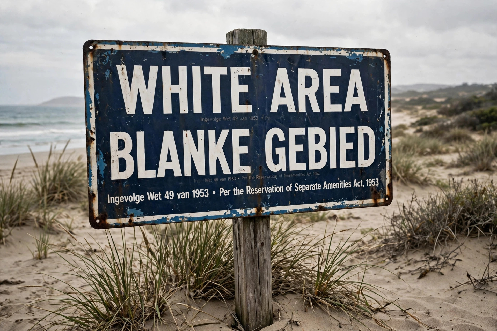

Apartheid (Afrikaans for "apartness", lit. "separateness") was a system of institutionalised racial segregation that existed in South Africa and South West Africa (now Namibia) from 1948 until the early 1990s. It was characterised by an authoritarian political culture based on white supremacy, which ensured that South Africa was dominated politically, socially, and economically by the nation's minority white population.

Racial segregation in South Africa began in colonial times, but apartheid as an official policy was introduced following the general election of 1948, won by the National Party. Legislation classified inhabitants into racial groups — "black", "white", "coloured" and "Indian" — and residential areas were segregated by means of forced removals. Key laws included the Population Registration Act and Group Areas Act of 1950, the Prohibition of Mixed Marriages Act, and the creation of nominally independent tribal homelands known as Bantustans.
From the 1950s, a series of popular uprisings and protests was met with state repression, including the Sharpeville massacre of 1960 and the Soweto uprising of 1976. The African National Congress and other liberation movements resisted the system, and Nelson Mandela was imprisoned from 1962 until 1990. The United Nations condemned apartheid, an arms embargo was imposed, and a broad international campaign of boycotts and sanctions developed. The International Convention on the Suppression and Punishment of the Crime of Apartheid (1973) declared apartheid a crime against humanity.
Under President F. W. de Klerk, the government began dismantling apartheid in 1990: discriminatory legislation was repealed, political parties were unbanned, and Mandela was released. Negotiations led to the country's first democratic elections in 1994, in which the ANC won and Mandela became president. A Truth and Reconciliation Commission was later established to investigate abuses committed during the era.